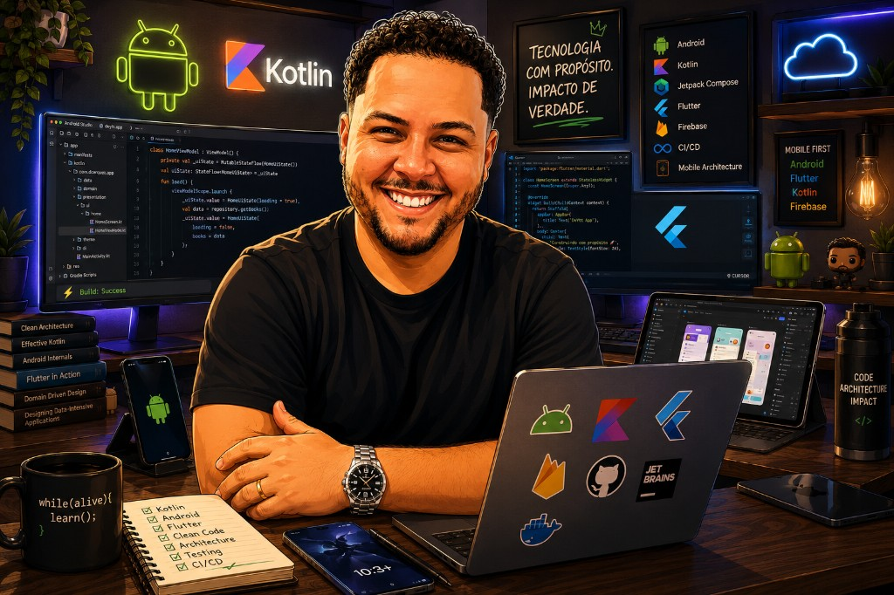

DC
David Cerqueira
Stack
PT
/
EN
Stack
Mobile Software Engineer
David Cerqueira
Android
Kotlin
Flutter
Fintech
LinkedIn

Android Engineering
Flutter Development
Fintech & Open Finance
Stack
Core Mobile
Android
Kotlin
Java
Flutter
Dart
Jetpack
Compose
Clean Architecture
MVVM
Modularization
SOLID
Design Patterns
DDD
Coroutines
Flow
RxJava
Retrofit
Room
SQLite
REST APIs
Unit Testing
JUnit
Mockito
MockK
Code Review
TDD
Platform & DevOps
Gradle
Firebase
GitHub Actions
GitLab CI/CD
Bitrise
Git / Git-Flow
Fastlane
DI & Tools
Koin
Dagger
Android Studio
IntelliJ
Figma
Cursor
2021 –
Senior Android Engineer
Digio / GO.K ·
Set – Dez 2021
Tech Lead
Capgemini ·
2019 – 2021
Android Developer
Kaffa Mobile ·
2017 – 2019
Kaffa Mobile
2025 – 2026
FIAP
2017 – 2021
UNIP
2015 – 2017
SENAI Zerbini
⚡
🏛
🤝
🎯
LinkedIn
GitHub
Instagram